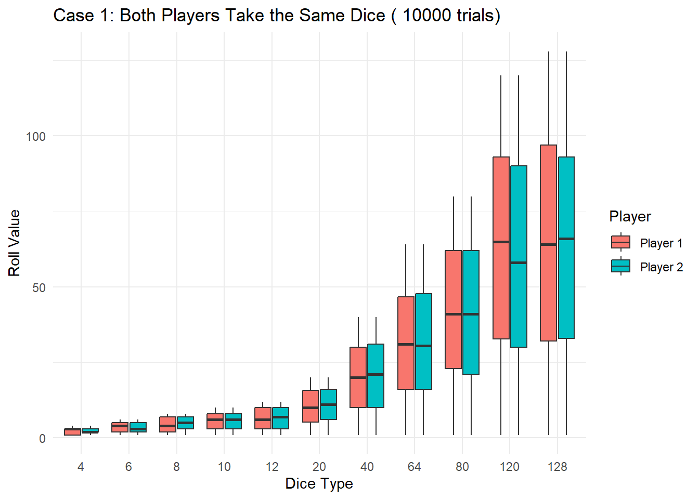
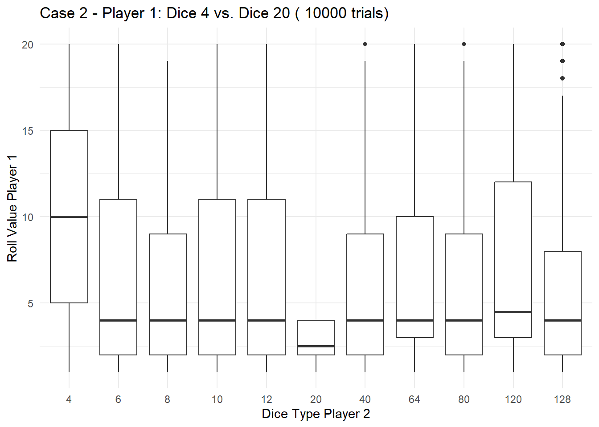
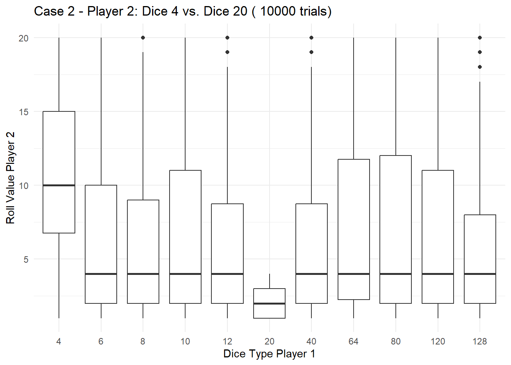
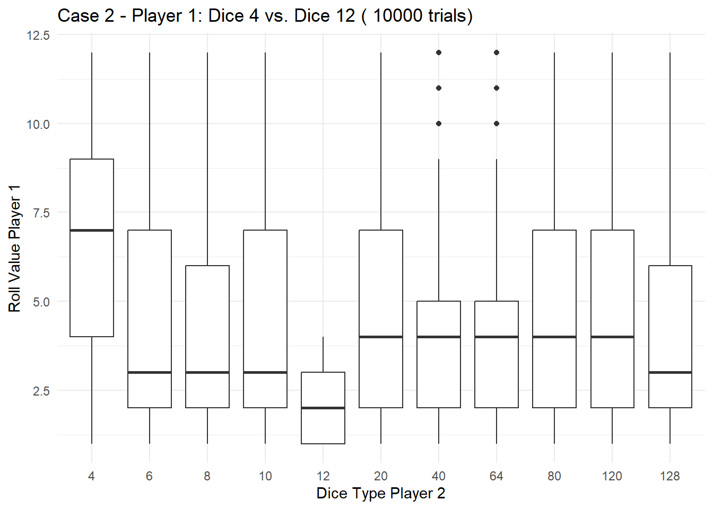
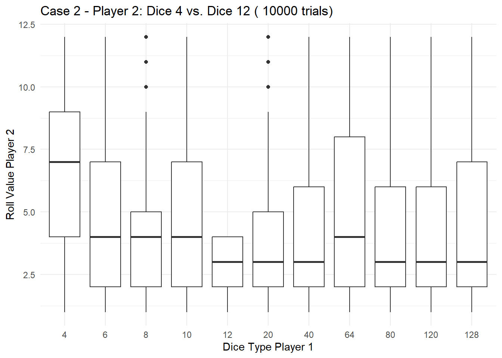
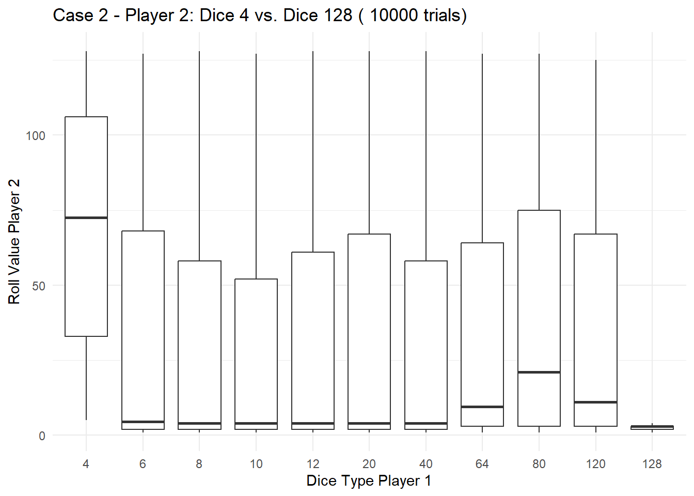

library(ggplot2)
# Function to simulate a single dice duel with both players taking the same type of dice
simulate_same_dice_duel <- function() {
dice_type <- sample(c(4, 6, 8, 10, 12,20,40,64,80,120,128), 1)
roll_player1 <- sample(1:dice_type, 1)
roll_player2 <- sample(1:dice_type, 1)
return(c(dice_type, roll_player1, dice_type, roll_player2))
}
# Function to simulate a single dice duel with both players taking different types of dice
simulate_different_dice_duel <- function() {
dice_types <- sample(c(4, 6, 8, 10, 12,20,40,64,80,120,128), 2, replace = FALSE)
roll_player1 <- sample(1:dice_types[1], 1)
roll_player2 <- sample(1:dice_types[2], 1)
return(c(dice_types[1], roll_player1, dice_types[2], roll_player2))
}
# Monte Carlo simulation for both cases
num_trials <- 10000
# Case 1: Both players take the same type of dice
same_dice_simulation_results <- replicate(num_trials, simulate_same_dice_duel())
same_dice_data <- data.frame(Player = rep(c("Player 1", "Player 2"), each = ncol(same_dice_simulation_results)),
Dice_Type = rep(same_dice_simulation_results[1, ], 2),
Roll_Value = as.integer(c(same_dice_simulation_results[2, ], same_dice_simulation_results[4, ])))
# Visualize the results for Case 1 using ggplot2
ggplot(same_dice_data, aes(x = factor(Dice_Type), y = Roll_Value, fill = Player)) +
geom_boxplot() +
labs(title = paste("Case 1: Both Players Take the Same Dice (", num_trials, "trials)"),
x = "Dice Type",
y = "Roll Value",
fill = "Player") +
theme_minimal()
# Case 2: Both players take different types of dice
different_dice_simulation_results <- replicate(num_trials, simulate_different_dice_duel())
different_dice_data <- data.frame(Player = rep(c("Player 1", "Player 2"), each = ncol(different_dice_simulation_results)),
Dice_Type_Player1 = rep(different_dice_simulation_results[1, ], 2),
Roll_Value_Player1 = as.integer(c(different_dice_simulation_results[2, ])),
Dice_Type_Player2 = rep(different_dice_simulation_results[3, ], 2),
Roll_Value_Player2 = as.integer(c(different_dice_simulation_results[4, ])))
# Visualize the results for Case 2 - Player 1 (Dice 4 vs. Dice 20)
ggplot(subset(different_dice_data, Dice_Type_Player1 %in% c(4, 20)), aes(x = factor(Dice_Type_Player2), y = Roll_Value_Player1)) +
geom_boxplot() +
labs(title = paste("Case 2 - Player 1: Dice 4 vs. Dice 20 (", num_trials, "trials)"),
x = "Dice Type Player 2",
y = "Roll Value Player 1") +
theme_minimal()
# Visualize the results for Case 2 - Player 2 (Dice 4 vs. Dice 20)
ggplot(subset(different_dice_data, Dice_Type_Player2 %in% c(4, 20)), aes(x = factor(Dice_Type_Player1), y = Roll_Value_Player2)) +
geom_boxplot() +
labs(title = paste("Case 2 - Player 2: Dice 4 vs. Dice 20 (", num_trials, "trials)"),
x = "Dice Type Player 1",
y = "Roll Value Player 2") +
theme_minimal()
# Visualize the results for Case 2 - Player 1 (Dice 4 vs. Dice 12)
ggplot(subset(different_dice_data, Dice_Type_Player1 %in% c(4, 12)), aes(x = factor(Dice_Type_Player2), y = Roll_Value_Player1)) +
geom_boxplot() +
labs(title = paste("Case 2 - Player 1: Dice 4 vs. Dice 12 (", num_trials, "trials)"),
x = "Dice Type Player 2",
y = "Roll Value Player 1") +
theme_minimal()
# Visualize the results for Case 2 - Player 2 (Dice 4 vs. Dice 12)
ggplot(subset(different_dice_data, Dice_Type_Player2 %in% c(4, 12)), aes(x = factor(Dice_Type_Player1), y = Roll_Value_Player2)) +
geom_boxplot() +
labs(title = paste("Case 2 - Player 2: Dice 4 vs. Dice 12 (", num_trials, "trials)"),
x = "Dice Type Player 1",
y = "Roll Value Player 2") +
theme_minimal()
# Visualize the results for Case 2 - Player 2 (Dice 4 vs. Dice 128)
ggplot(subset(different_dice_data, Dice_Type_Player2 %in% c(4, 128)), aes(x = factor(Dice_Type_Player1), y = Roll_Value_Player2)) +
geom_boxplot() +
labs(title = paste("Case 2 - Player 2: Dice 4 vs. Dice 128 (", num_trials, "trials)"),
x = "Dice Type Player 1",
y = "Roll Value Player 2") +
theme_minimal()
# Summarize the results for Case 1 (Same Dice)
summary_case1 <- table(same_dice_data$Roll_Value)
# Summarize the results for Case 2 (Different Dice)
summary_case2 <- table(different_dice_data$Roll_Value_Player1 == different_dice_data$Roll_Value_Player2)
# Display summaries
cat("\nSummary of Case 1 - Same Dice:\n")
Summary of Case 1 - Same Dice:print(summary_case1)
1 2 3 4 5 6 7 8 9 10 11 12 13 14 15 16
1578 1571 1574 1491 1059 1072 766 766 586 558 407 332 197 210 208 226
17 18 19 20 21 22 23 24 25 26 27 28 29 30 31 32
217 205 211 222 139 130 116 118 147 130 136 135 121 118 135 128
33 34 35 36 37 38 39 40 41 42 43 44 45 46 47 48
133 133 132 154 113 148 114 129 62 71 62 79 78 73 83 68
49 50 51 52 53 54 55 56 57 58 59 60 61 62 63 64
95 76 68 77 78 68 86 92 71 79 85 82 69 72 83 72
65 66 67 68 69 70 71 72 73 74 75 76 77 78 79 80
57 49 46 51 62 54 44 50 62 49 41 54 48 58 63 64
81 82 83 84 85 86 87 88 89 90 91 92 93 94 95 96
23 33 27 27 23 39 33 31 30 19 22 33 26 26 24 27
97 98 99 100 101 102 103 104 105 106 107 108 109 110 111 112
30 41 24 30 39 24 33 34 28 29 31 30 32 30 27 31
113 114 115 116 117 118 119 120 121 122 123 124 125 126 127 128
29 26 30 24 25 33 23 23 9 7 18 15 10 16 17 13 cat("\nSummary of Case 2 - Different Dice:\n")
Summary of Case 2 - Different Dice:print(summary_case2)
FALSE TRUE
19348 652